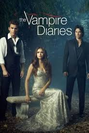
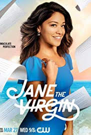
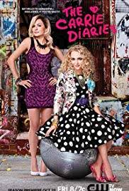

What to watch
These are the top five romance series to watch on Netflix according to popular vote.
Grey's Anatomy
Meredith begins working at Seattle Grace hospital and discovers she slept with her boss the night before. She falls in love with Derek and her co-workers face love challenges too.

Gossip Girl
Serena Vander Woodsen, a rich girl from New York in the upper east falls for lonely boy, Dan Humpphreys from Brooklyn.

The Vampire Diaries
Elena Gilbert meets the Salvatore brothers and learns that they are vampires, that changes her world because there's more supernatural creatures in Mystic Falls, Virginia.
Jane the Virgin
Jane Gloriana Villanueva, a virgin finds out that she is pregnant after being inseminated by mistake. Her perfect life is now in shambles because her boyfriend Michael struggles belive she is a pregant virgin.
The Carrie Diaries
Carrie wants to persue to be a writer to be like her mom, who passed away.She goes to New York to be in an internship but ends up meeting Larissa,magazine editor for Interview magazine. Carrie ends up working with Larissa and is sure New York is meant for her.
